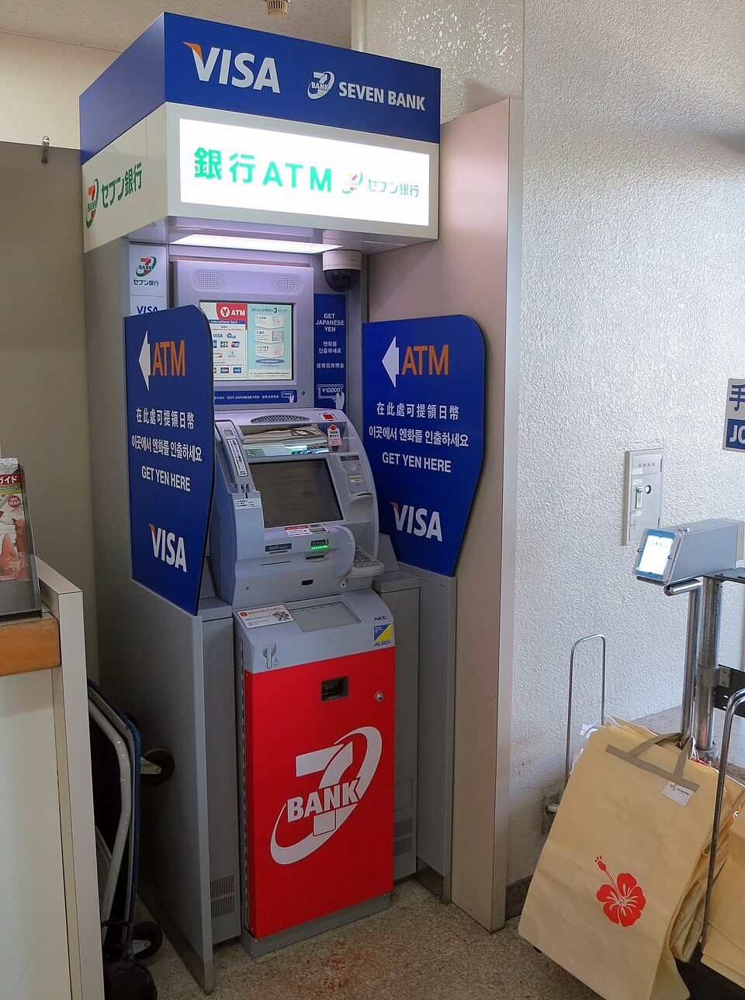

ボーナスの使い道：冬の平均額と手取りの目安、みんなの使い道、考える順番（2026年冬）
要点まとめ
冬のボーナスを前に、「いくら出て、いくら手元に残り、何に使えばいいか」を、厚生労働省・国税庁・金融庁などの資料で整理しました。主な読者は、会社からボーナスを受け取る会社員です。使い道の順番は筆者の考え方ですが、その根拠になる制度や数字には出典を付けています。この記事は特定の金融商品をすすめるものではありません。
冬のボーナスは平均いくらか
「平均」は、何の平均かで大きく変わる
大手企業の平均は、民間全体の平均の2倍以上
厚生労働省の毎月勤労統計調査（従業員5人以上の事業所）では、2025年の年末賞与は、ボーナスを支給した事業所の1人平均で424,889円（前年比2.8%増）でした[1]。ボーナスを出さない事業所も含めた全体の平均は367,529円です[1]。経団連が集計した大手企業の平均は1,004,841円（前年比8.57%増）でした[6]。
2026年冬は、6年続けて増えるという予測
第一生命経済研究所は、前年比3.0%増と予測
第一生命経済研究所は2026年11月6日に、民間企業の2026年冬のボーナスの1人あたり支給額を、毎月勤労統計の基準で前年比3.0%増と予測しました[2]。冬のボーナスとしては6年連続の増加になる見込みです[2]。経団連の2026年冬の集計は、調査日の時点ではまだ公表されていません。
国家公務員は、支給月数を上げる勧告
2026年の人事院勧告は、年4.65か月分を4.70か月分に
勧告どおりに法律が改正されれば、12月期は合わせて2.375か月分になります（筆者の計算）[9]。法律の改正の状況は、調査日の時点では確認できていません。
手取りはいくらになるか
額面50万円なら、手取りは約41万円
東京・40歳未満・扶養なしの例で、手取りは409,130円
| 項目 | 計算 | 引かれる額 |
|---|---|---|
| 健康保険 | 50万円×9.85%÷2 | 24,625円 |
| 子ども・子育て支援金 | 50万円×0.23%÷2 | 575円 |
| 厚生年金 | 50万円×18.3%÷2 | 45,750円 |
| 雇用保険 | 50万円×5/1,000 | 2,500円 |
| 所得税（復興特別所得税を含む） | （50万円−社会保険料73,450円）×4.084% | 17,420円 |
| 手取り | 50万円−引かれる額の合計 | 409,130円（81.8%） |
前提: 東京都の協会けんぽに入っている40歳未満の会社員で、扶養親族はなく、前月の給与は30万円としました。料率は協会けんぽ東京の2026年度の保険料額表と、厚生労働省の雇用保険料率（一般の事業）を使っています[10][11]。保険料は、標準賞与額（1,000円未満を切り捨てた額）に料率をかけ、その半分を本人が負担します[12][13]。雇用保険料は、賞与にもかかるものとして計算しました。
所得税の率は、前月の給与で決まる
前月の給与が多いほど、ボーナスにかかる率が上がる
ボーナスの所得税は、前月の給与から社会保険料を引いた額と、扶養親族の数で率が決まります[14]。扶養親族がいない人の場合、前月の社会保険料を引いた後の給与が9万4千円以上26万円未満なら4.084%、26万円以上30万9千円未満なら6.126%です[14]。この率には復興特別所得税が含まれています[15]。
住民税は、毎月の給料から引かれる
会社員の住民税は、6月から翌年5月の毎月の給料から引かれる
会社員の住民税は、6月から翌年5月までの毎月の給料から引かれます（特別徴収）[18]。そのため、ボーナスの明細には住民税の欄が出ないのがふつうです（筆者の見解）。
みんなは何に使っているか
夏のボーナスの使い道は、貯金・預金が1位
「貯金・預金」が33.6%で、13年連続の1位
共通ポイント「Ponta」を運営するロイヤリティ マーケティングが、2026年5月に3,000人に聞いた調査です[3]。回答者のうち46.5%は「支給されない・分からない」と答えていて、上の割合はその人たちも含めた全体に対する割合です[3]。前回の調査から増えたのは「貯金・預金」と「投資信託」で、どちらも1.2ポイント増えました[3]。
会社員の世帯は、手取りの約35%が黒字
黒字の多くは預貯金。月平均で177,061円増えている
総務省の家計調査（2人以上の世帯のうち勤労者世帯）では、2025年の黒字率（手取りの収入のうち、使わずに残った割合）は35.0%でした[19]。黒字の内訳を見ると、預貯金の純増が月平均177,061円で、大部分を占めています[19]。
使い道を考える順番
ここからは、使い道を考える順番を、筆者の考え方として示します。どの順番がよいかは、借入れの有無や家族の状況で変わります。
① 金利の高い借入れがあれば、先に返す
消費者金融などの上限金利は、年15〜20%
貸金業者からの借入れの上限金利は、利息制限法で、借りた額に応じて年15〜20%と決まっています[20]。一方、2026年11月募集の個人向け国債（固定5年）の利率は年2.17%です[5]。払う金利が、預けて受け取る利率よりずっと高い借入れがあるなら、先に返すほうが家計の負担は軽くなります（筆者の見解）。
② 貯める分を、先に分けておく
金融経済教育推進機構は「先に差し引く」貯め方を紹介
金融経済教育推進機構（J-FLEC）の教材は、収入から先に貯蓄の分を差し引く方法を、貯めるコツとして紹介しています[22]。急な出費に備えて、生活費の何か月分を手元に置けばよいかについては、公的な資料で具体的な目安を見つけられませんでした。

③ 長く置いておくお金は、NISAやiDeCoの枠を確かめる
NISAの成長投資枠は、まとまったお金で一括で買える
NISAは、つみたて投資枠と成長投資枠を合わせて年間360万円まで、生涯で1,800万円まで使えます[23]。つみたて投資枠で積立を続けながら、成長投資枠で一括で投資することもできます[23]。iDeCoには、掛金を毎月ではなく、決めた月にまとめて払う「年単位拠出」の仕組みがあります[24]。
くわしく
- NISAの枠は、買ったときの金額（簿価）で計算する[23]
- iDeCoの年単位拠出は、11月分を含む区分の設定が必須[24]
- 年単位拠出の資料は2017年のもの。2026年12月の改正後の扱いは確認できていない
- iDeCoの上限の引き上げは、iDeCo・NISAの2027年改正まとめを参照
住宅ローンの繰上返済は、手数料と控除を確かめる
フラット35の一部繰上返済は、手数料がかからない
住宅金融支援機構のフラット35は、一部繰上返済の手数料がかかりません[25]。インターネットの「住・My Note」なら10万円以上から返せます[25]。ただし、繰上返済で返済期間が10年未満になると、住宅ローン控除が受けられなくなります[25]。
年末までに期限があるもの
- 11月9日〜30日
個人向け国債の11月募集
変動10年は初回の利率1.85%、固定5年は2.17%、固定3年は1.94%。発行日は12月15日[5]
- 12月
年末調整で、1年分の所得税を精算
- 12月31日
ふるさと納税の2026年分の締め切り
個人向け国債は、1年たてば途中で換金できる
発行から1年たてば、いつでも途中で換金できる
個人向け国債は、発行から1年が過ぎれば、いつでも途中で換金できます[5]。そのときは、直前2回分の利子（税引前）に0.79685をかけた額が差し引かれます[5]。12月募集分の利率は、調査日の時点ではまだ発表されていません。
ふるさと納税は、ポイントがつくサイトでの募集が禁止に
2025年10月から、ポイントを付けるサイト経由の募集を禁止
寄附した額やお礼の品に加えてポイントを付けるサイトを通じた募集は、2025年10月1日から禁止されています[26]。ふるさと納税で寄附した分は、その年の所得税と翌年度の住民税から控除されます[27]。
ボーナスを狙う勧誘に注意
個人名義の口座への振り込みを指示されたら、詐欺
投資の振込先が個人名義の口座なら、振り込まない
国民生活センターは2026年9月1日に、SNSで著名人が勧める「もうかる方法」をきっかけにした金融のトラブルに注意を呼びかけました[28]。投資のお金の振込先に個人名義の口座を指定されたら、それは詐欺だとしています[28]。副業のサポートや投資の名目で、借金をさせる業者についても注意を呼びかけています[29]。
困ったときは、消費者ホットライン「188」で近くの消費生活センターなどにつながります[30]。
今回確認できなかった点
- 雇用保険料が賞与にもかかることを明記した公的資料（試算ではかかるものとした）
- 経団連の2026年冬の集計と、国家公務員の冬の支給額
- 家計の金融資産についての世論調査（金融経済教育推進機構の資料を読めなかった）
- ボーナスの月だけの家計の収支（家計調査の月別の数字）
- 急な出費に備えるお金の、公的な月数の目安
- 個人向け国債の12月募集分の利率
出典（30件）
閲覧日はいずれも2026年11月9日
- 毎月勤労統計調査 2026年2月分結果速報（2025年年末賞与）（2026年4月8日）（厚生労働省）
- 2026年・冬のボーナス予測～前年比＋3.0％と6年連続の増加を予想～（2026年11月6日）（第一生命経済研究所）
- 第64回 Ponta消費意識調査（夏のボーナスの使い道）（2026年6月）（ロイヤリティ マーケティング）
- 年末年始の取扱いについて（ふるさと納税）（山梨県）
- 個人向け国債の発行条件等（2026年11月6日）（財務省）
- 2025年年末賞与・一時金 大手企業業種別妥結結果（2025年12月24日）（日本経済団体連合会）
- 毎月勤労統計調査 2026年9月分結果速報（2026年夏季賞与）（2026年11月6日）（厚生労働省）
- 2026年夏季賞与・一時金 大手企業業種別妥結結果［最終集計］（2026年8月6日）（日本経済団体連合会）
- 本年の給与勧告のポイントと給与勧告の仕組み（2026年8月）（人事院）
- 令和8年3月分（4月納付分）からの健康保険・厚生年金保険の保険料額表（東京都）（全国健康保険協会（協会けんぽ））
- 令和8（2026）年度 雇用保険料率のご案内（厚生労働省）
- 「標準報酬月額」「標準賞与額」とは何ですか。（日本年金機構）
- 保険料の計算方法について（日本年金機構）
- 賞与に対する源泉徴収税額の算出率の表（令和8年分）（国税庁）
- 令和8年分 源泉徴収税額表（表紙・復興特別所得税について）（国税庁）
- 令和8年分 源泉徴収税額表の使い方（国税庁）
- 源泉所得税の改正のあらまし（令和8年4月）（国税庁）
- 個人住民税と特別徴収について（東京都主税局）
- 家計調査報告（家計収支編）2025年（令和7年）平均結果の概要（総務省統計局）
- 貸金業法Q&A（金融庁）
- お借入れは年収の3分の1まで（総量規制について）（日本貸金業協会）
- 重点テーマ：生活設計・家計管理 60分講義モデル（2025年9月）（金融経済教育推進機構（J-FLEC））
- NISA特設ウェブサイト「NISAの概要」（金融庁）
- 掛金の年単位拠出について（2017年12月）（国民年金基金連合会（iDeCo公式サイト））
- フラット35繰上返済（住宅金融支援機構）
- ふるさと納税の指定基準の見直し等（2024年6月28日）（総務省）
- ふるさと納税のしくみ「ふるさと納税の流れ」（総務省）
- SNSで著名人が勧める“もうかる方法” それって本当！？（2026年9月1日）（国民生活センター）
- 副業サポートや投資の名目で借金させる業者に注意！（2026年5月20日）（国民生活センター）
- 消費者ホットライン（消費者庁）
写真・画像の出典（2件）
- 硬貨と紙幣を入れた貯金びん
写真: stevepb／Wikimedia Commons（CC0） - コンビニ銀行のATM
写真: Stefan Krasowski／Wikimedia Commons（CC BY 2.0）